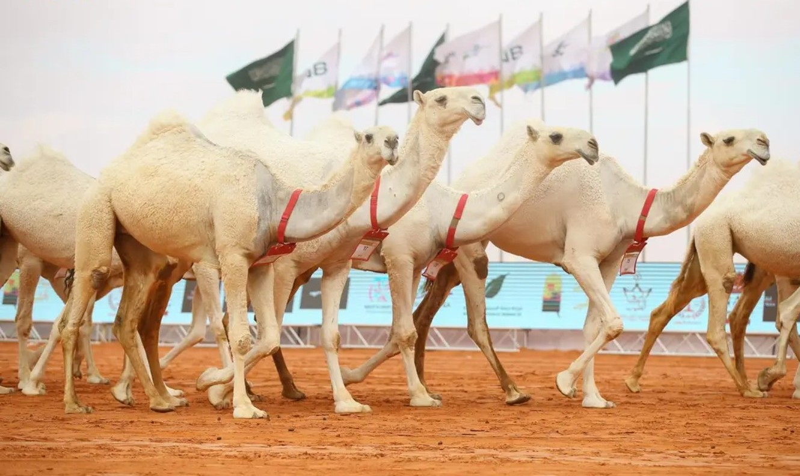

The Ship of the Desert and an Authentic Cultural Legacy
Camels are among the most prominent creatures linked to the history and environment of the Arab people; they serve as a living symbol of patience, strength, and authenticity within Arab culture—particularly in the Gulf region.
Types of Camels
Camels in the Arabian Peninsula vary according to their color and breed. Among the most prominent types are:
-
Al-Majahim: Also known as "Najdi" camels, they are characterized by their dark black color, large size, and high milk yield.
-
Al-Maghateer (Al-Wadh): Camels with a pure white coat; they hold a high status in terms of both aesthetic appeal and social standing.
-
Al-Shul, Al-Sufr, and Al-Humr: These categories encompass colors ranging from yellow and blonde to dark red; each type has its own dedicated admirers at festivals.
Benefits of Camels
-
Camel milk: Rich in vitamin C and iron, and contains lower levels of fat and lactose compared to cow's milk, making it suitable for those with lactose intolerance.
-
Investment and Trade: The trade in camels—particularly rare breeds—serves as a major economic resource, with their value at auctions and festivals reaching millions of riyals.
-
A land transport vehicle: It is exceptionally capable of traversing long distances across rugged sandy terrain and enduring harsh climatic conditions—challenges that other modes of transport cannot overcome deep within the desert.
King Abdulaziz Camel Festival
|
Type
|
Color
|
|
Al-Wadh
|
white
|
|
Al-Majahim
|
black
|

Join our exclusive camel club
Join